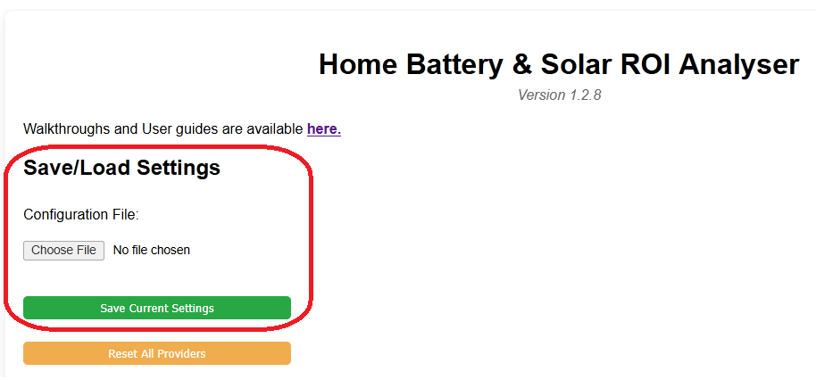
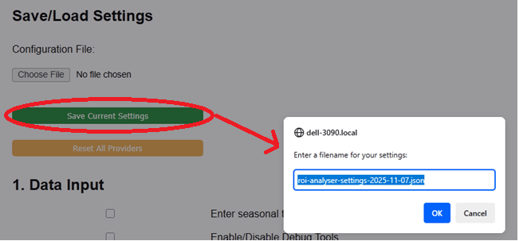
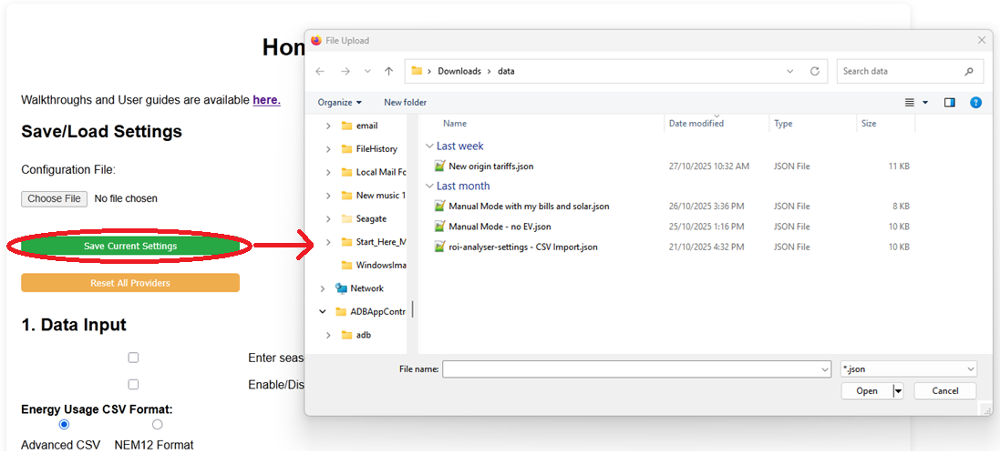
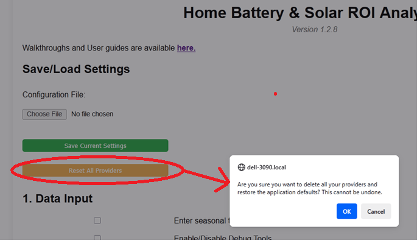

This feature is one of the most powerful tools in the analyser. It allows you to save your entire setup (all inputs and provider tariffs) to a JSON file on your computer. This lets you create backups, build multiple "what-if" scenarios, and share your setup with others.
The controls for saving and loading are located at the very top of the analyser, just below the main title, in the "Save/Load Settings" section.

Click the Save Current Settings button.

What is saved: The file saves *all* your inputs from all sections (system sizes, costs, analysis years, etc.) and your *entire* list of configured providers and their tariffs.
What is NOT saved: The file does *not* save the large CSV/NEM12 files you uploaded. You will need to re-upload those files separately after loading a configuration.
Click the Choose File button next to "Configuration File:".

Warning: Loading a configuration file will overwrite all your current settings, including any provider tariffs you have manually configured. Save your current setup first if you want to keep it.
Save Current Settings and save it as `scenario-10kwh-battery.json`.Save Current Settings and save it as `scenario-20kwh-battery.json`.You can now quickly load these different scenario files to compare them without re-entering all the data.
Also in this section is the Reset All Providers button. This is a quick way to restore the analyser's default provider list.

Warning: This button is destructive. It will permanently delete all your custom providers and any edits you've made. It cannot be undone.
Always use the Save Current Settings button to create a backup *before* using this reset button.